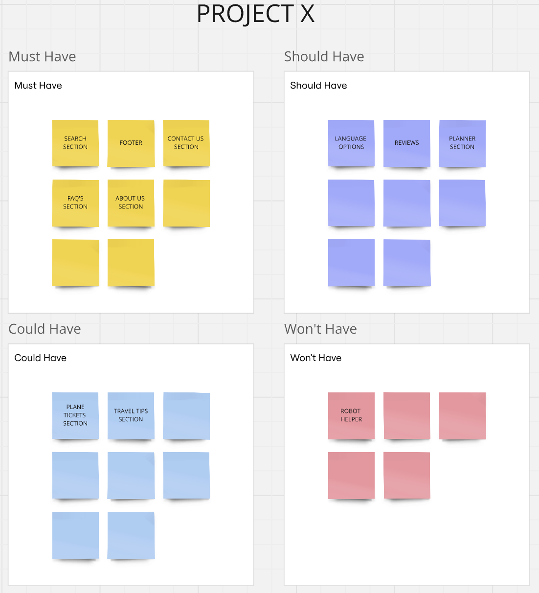

For this project, i had to chose my own project and develop it. So i picked out a simple, user-friendly application to help users plan their trips by offering basic suggestions for places to visit. And users can search and view information about popular travel destinations.
Project Details
The beginning I wanted to do an app for this travel planner idea of mine but I told my teacher Stan about the fact I don’t think I have enough time to do a whole application and he agreed on it. He said that making a good prototype and a small first start of the website will be enough.
I started brainstorming on what exactly I want my project to have.
I visited other travel agency websites looked what I must add and what I can go without.

i then carefully thought how to plan my daily goals by making a project plan. Project Plan File Here
Actually two years ago I worked in a travel agency, upgrading their website when needed so I had a brief knowledge.
I made a MosCow table so I work organized. Putting all the important elements in the ‘Must Have’ and the as well important but given more time in the ‘Should Have’ and as ‘Won’t Have’ what I though I won’t have enough time to make.

I was sure I wanted to add top destinations because the website look fuller and better with them and because of that I wanted to add a search bar section so when the user doesn’t see their destination they could search it up.

Obviously because it’s an agency it needs an ‘about us’ and ‘contact us’ page. When I visited competitors I noticed that not all of them have language options, I decided to add one for my project because after all it is a travelling website which means people from around the world will visit it and need to chose there language.

I wanted to add a page that gives you information about each city, like the most popular places that people go to, but then I wanted something more so it actually helps out the user. I still added the information page but as well added a ‘planner’ where users can submit the time they want to stay at the destination and after that the website plans their whole trip. And on the end it gives travel tips, for example, get an umbrella or get sunglasses.


Feedback
I got feedback on this idea from Anke and she liked it but suggested for me to add reviews so that people can trust the planner. I definitely agreed with her, from personal experience I have always looked for reviews in almost everything.

I did not want to add a robot helper because the ones I have came across to previously never ended up helping or clearing some type of confusing I had. Also I think that contacting an actual worker asking them something especially for travelling would be much more useful.
I did a couple of user tests. The first person found it pretty easy to work with and enjoyed the design but recommended adding FAQ’s so that users don’t need to constantly call the workers. She also advised me to use different colors rather than sticking to the same blue for every page. I agreed with the FAQ’s section and immediately got to work. However I did not completely agree on the color matter, I think using one color keeps the consistency, but then I rethought and decided to change the colors slightly, not drastically. Depending on the image of each page the colors will match it.


I also made a survey here.
I got majority that people are open to use websites like the project i am making because they usually plan them on their own and miss out on some cool places.
And that they mostly find destinations thru trends or friends.

I started by creating the basics for the website by following the prototype. I have added most of the sections on the home page.
i still have a lot of work to do untill the deadline - 17th. But i am happy with what i have made for the time i had. It wasn’t hard because everything i have done so far i have already made in previous projects.
Reflection
Through this project, I learned a lot about user testing. I did a lot of research for the making of this project. Asking people what they want to see, what they dont want, what is a MUST to include and so on.
I definitely would try to work faster and finish more stuff next time.